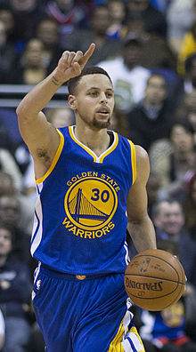

No. 30 – Golden State Warriors
Position
Point guard
League
NBA
March 14, 1988 (age 28) | 6 ft 3 in (1.91 m) | American | 190 lb (86 kg)
Career highlights and awards
- NBA champion (2015)
- 2× NBA Most Valuable Player (2015, 2016)
- 3× NBA All-Star (2014–2016)
- All-NBA First Team (2015)
- All-NBA Second Team (2014)
- NBA scoring champion (2016)
- NBA steals leader (2016)
- 50–40–90 club (2016)
- NBA Three-Point Contest champion (2015)
- NBA Sportsmanship Award (2011)
- NBA All-Rookie First Team (2010)
- AP Athlete of the Year (2015)
- Consensus first-team All-American (2009)
- Consensus second-team All-American (2008)
- NCAA Division I scoring leader (2009)
- 2× SoCon Player of the Year (2008, 2009)